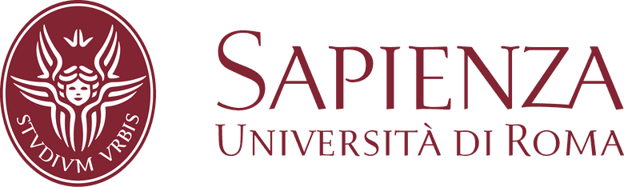

Self-Explaining Transformer Architectures for Legal Document Classification
Under review · Discover Artificial Intelligence, Springer Nature
I am a Computer Science undergraduate at Ionian University and an AI/ML research assistant working across machine learning, deep learning, explainable AI, natural language processing, and retrieval-augmented generation.
At the Humanistic and Social Informatics Lab (HILab), Ionian University, I work on transformer-based NLP, interpretable machine learning, and scientific AI — including a legal-domain BERT model for named-entity recognition and anonymization, a layer-wise study of transformer explainability, an efficient-attention approach to protein-structure prediction, and an investigation of expressivity, trainability, and gradient scaling in variational quantum classifiers. During my Erasmus+ exchange at Sapienza University of Rome, I conduct research at the PSSM Lab, DIAG, under Prof. Massimo Mecella, where I lead the development of LegalSENN, an intrinsically interpretable transformer architecture for legal document classification. I have also worked in industry as an AI researcher, evaluating large language and multimodal models and building reproducible PyTorch evaluation tooling.
My research has resulted in four peer-reviewed publications and two manuscripts currently under review. I am broadly interested in building AI systems that are accurate, transparent, and reliable enough for real-world deployment.
Self-Explaining Transformer Architectures for Legal Document Classification
Under review · Discover Artificial Intelligence, Springer Nature
Expressivity, Trainability, and Gradient Scaling in Variational Quantum Classifiers
Under review · Discover Computing, Springer Nature
LegNER: A Domain-Adapted Transformer for Legal Named Entity Recognition and Text Anonymization
Published · Frontiers in Artificial Intelligence, 8, 1638971 · Paper
Analyzing Public Discourse and Sentiment in Climate Change Discussions Using Transformer-Based Models
Published · IFIP International Conference on Artificial Intelligence Applications and Innovations (AIAI), pp. 39–53, Springer · Paper
Do Deeper Layers Explain Better? An LID-Based Study of Transformer Explainability
Published · IEEE International Conference on Big Data (BigData), pp. 6552–6559 · Paper
Efficient Protein Folding with Transformer Models Using the Performer Architecture
Published · International Conference on Advances in Information and Communication Technology (ICTA) · Paper
Researched and evaluated large language and multimodal models across performance, robustness, and alignment dimensions, and built Python/PyTorch evaluation tooling to automate benchmarking workflows and improve experimental reproducibility, working within a small technical R&D team.
B.Sc. Computer Science, Department of Informatics · 2024–2028 (expected)

Erasmus+ Exchange · Visiting Research Student, DIAG · 2025–2026
Peer Tutor · Ionian University
Informal peer tutoring and coursework guidance for fellow students in Operating Systems, Artificial Intelligence, Data Mining, and Databases.
IT, Logistics & PR Coordination Team · Ionian University Student Conference in Informatics
Contributes to communication, logistics, and event operations for the university’s student informatics conference.
Erasmus+ Buddy · ESN Ionian
Supported incoming Erasmus students with practical guidance and integration into university and local student life.